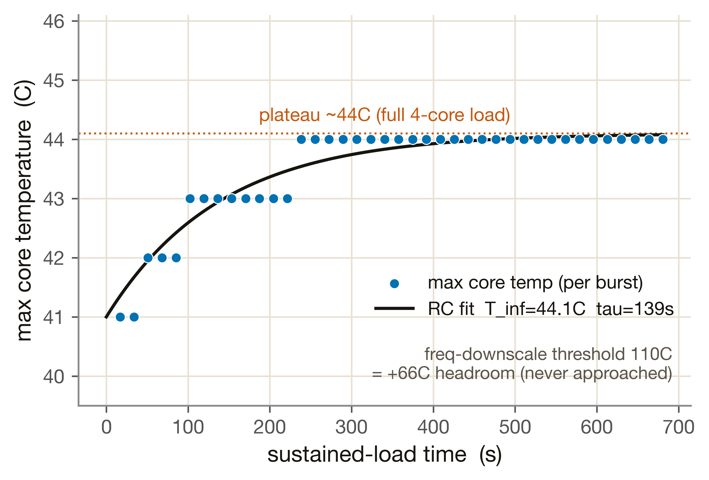
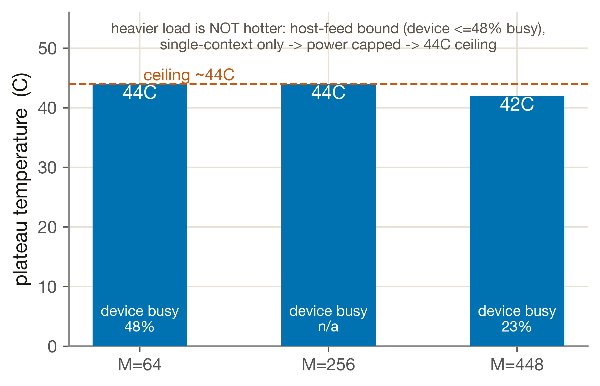
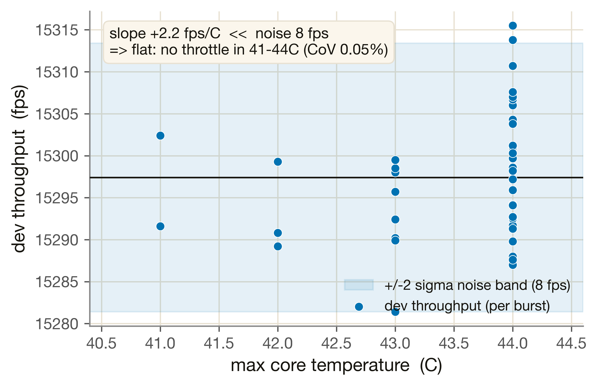

溫度（熱）
M8 是一個事後附加的開環熱層：讀 Phase 2 算出的 per-op 活動/功耗 timeline，用 lumped RC 模型估出溫度軌跡，不把 throttling 回饋進 timing（v1）。本頁是 Phase 0.4 在量產 Metis Card 上實量的熱響應——以及一個關鍵附帶問題：效能會不會隨溫度上升而改變。
M8 的基本功能 = 把「算了多少、多久」換算成溫度。它與 M1–M7 完全解耦（讀它們的活動 timeline，不改它們的 timing），所以可以在 Phase 0.4 / 1.7 之後才以獨立模組加入。
溫度怎麼讀（已驗收）：量產 Card 的 axllm --show-temp tracer 在 SDK 1.6.0 不支援；改用 axrunmodel 每次 run 的摘要行 temp:<C>C（最高核溫，throttle 最相關的那顆；5-sensor slog 間歇、不可靠故取 max-core）。負載用非 LLM 的合成 matmul（2048×2048 的 1×1-conv proxy，axrunmodel --seconds/--aipu-cores），把「難度×時長 → 溫度」跟 LLM 推論解耦。
在量產 Card 上跑 40 個連續 4-core 2048×2048 matmul burst（~11 分鐘持續滿載），每個 burst 記一個（時間, 吞吐, 最高核溫）點。kill-switch + abort-cap 全程守護（短 burst，板每分鐘只升 ~1°C，單 burst 不可能過衝）。

能不能更熱？— 不能，44°C 是天花板
跑更久沒用（139s 就到穩態）；更大 loading 也沒用。掃 M=64/256/448 + 試了並發：

為什麼升溫非線性（你問的 40→50 ≠ 50→60）：越接近穩態 T_inf，升溫速率 ∝ (T_inf−T) 越慢；同時散熱 ∝ ΔT，越熱散得越快。所以同樣 +1°C，越靠近平台越難、越花時間。每個參數：
| 參數 | 值 | 物理意義 |
|---|---|---|
| T0（起始） | 41 °C | 本次量測的起溫（板已被前面的 run 暖到 41°C；真 idle 更低、本次未量到） |
| T∞（穩態） | 44.1 °C | 滿 4-core 載的平台溫：= T_amb + P·R_th。板散熱很好，只到 ~44°C |
| τ（時間常數） | 139 s | 升到 63% ΔT 所需時間 = R_th·C_th。τ ≫ 1s → 1Hz 取樣足夠解析 |
| fit RMSE | 0.24 °C | RC 擬合殘差（1°C 溫度解析度下的貼合度） |
核心附帶問題：吞吐會不會隨溫度掉（thermal throttling）？把同一個固定負載的每-burst 吞吐對最高核溫畫出來：

| 檢查 | 值 | 門檻 | 結果 |
|---|---|---|---|
| 溫度正、隨持續負載單調上升 | 41→44°C | 必過 | ✅ PASS |
| 平台溫低於 PVT 警告 | 44.1°C | < 95°C | ✅ PASS |
| RC 擬合殘差 | 0.24°C | — | 呈現 |
| perf-vs-temp 斜率 vs 噪音 | 2.2 / 8 | |slope|≪noise | ✅ flat |
| throttle 門檻是否觸及 | 44°C | 110°C | ⚠ 未達（+66°C） |
| 項目 | 狀態 |
|---|---|
| 溫度可讀（量產 Card, max-core via axrunmodel） | ✅ 驗收 YES |
| RC 熱模型（T∞ 44.1°C / τ 139s）給 Phase 2 | ✅ 相對特性化 |
| perf 與溫度無關（正常範圍不 throttle） | ✅ 量到 |
| 絕對 R_th(°C/W) | ⚠ 無功耗 telemetry → 不出（或借 M7 估、標 assumption） |
| 降溫 τ | ⚠ collector idle 即停 → 未量（keepalive 偏置） |
| 5-sensor per-core 溫度 | ⚠ slog 間歇 → 只有 lumped max-core |
| Aetina 端熱 / 更寬溫度範圍 | ⚠ Aetina 送修；Card 散熱太好 span 僅 3°C |
結論：量產 Card 在滿 4-core 持續負載下跑得很涼（~44°C 平台、距降頻門檻 +66°C）、且不 throttle。M8 的 lumped RC 模型（開環）可直接給 Phase 2 估溫；絕對功耗校準與降溫 τ 留待有功耗 telemetry / keepalive 設計時補。
- 熱 + perf 擬合：
validation/reports/phase0.4/thermal.json（rc_fit / perf_vs_temp / throttle_thresholds） - 原始量測：
measurements/metis_card/thermal_heat_20260612.json（40 bursts: t / dev_fps / temp_C） - RC 參數（Phase 2）：
simulator/models/params/m8_thermal.json - 擷取 harness：
characterization/metis_card/thermal_capture.py（kill-switch / abort-cap） - 分析：
tools/analysis/fit_m8_thermal.py - contract / 誠實限制：
validation/contracts/m8.yaml